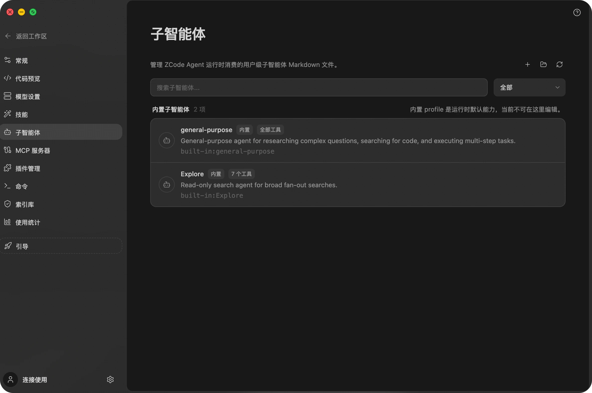
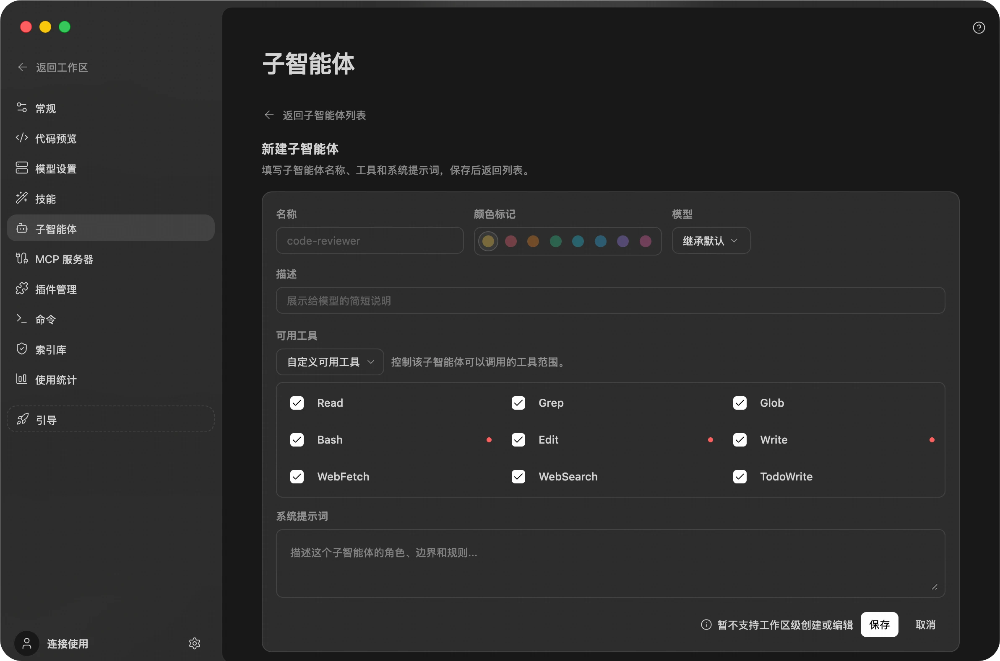
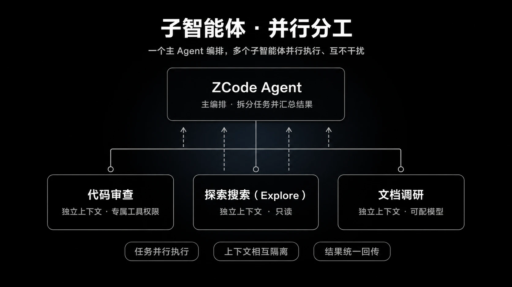

深度集成
子智能体
子智能体是主 Agent 可以在独立上下文中启动的专用 Agent，完成后会把结果汇总回主对话。Drora 内置了 general-purpose（通用型）和 Explore 子智能体，你还可以在设置中创建自己的用户级子智能体。
当主 Agent 判断任务需要独立上下文或并行调研时，会通过 Agent 工具启动子智能体。子智能体在自己的上下文中工作，并把结果汇总回主对话，帮助主 Agent 继续推进任务。
每个子智能体都是一个可复用的角色，拥有独立的名称、描述、工具权限与系统提示词。你可以在会话输入框里用 @ 直接引用某个子智能体，也可以把判断交给主 Agent——它会依据描述自动选用。
内置：通用型子智能体
general-purpose 是默认的通用型子智能体，拥有完整工具权限，适合在独立上下文中处理需要读取、修改、运行命令或综合推进的任务。主 Agent 可以在需要把一段工作拆出去并行推进时调用它。
适合交给 general-purpose 的任务包括：
- 独立实现一个小功能或修复一个明确问题。
- 在另一个上下文里整理文件、运行验证命令，并回传结果。
- 把可并行的文档、代码或配置任务拆开处理。
如果任务只需要只读调研、证据收集或调用链梳理，优先使用下面的 Explore。
内置：Explore
Explore 是一个只读的文件搜索和代码库调研专家，适合处理大范围检索、调用链梳理、代码结构理解和证据收集这类探索任务。
Explore 子智能体只用于只读探索，不会创建、修改、移动或删除文件。它主要使用读取和搜索相关工具，例如读取文件、按文件名匹配、按正则搜索内容，以及在需要时读取已知 URL 或搜索外部信息。
适合交给 Explore 的任务包括：
- 查找某个能力在哪些文件中实现。
- 梳理模块入口、调用链和关键依赖。
- 在改动前先调研相关代码和风险点。
- 并行搜索多个目录、命名方式或实现路径。
你可以直接在提示词里要求先做探索，例如：
请先用 Explore 调研这个模块的调用链，再总结修改入口和风险点。
请用只读方式搜索这个功能的实现位置，列出相关文件和证据。自定义子智能体（Beta）
你可以在「设置 → 子智能体」中创建自己的子智能体。自定义子智能体可以把一个可复用的角色——例如代码审查员、测试编写者、文档调研员——连同它的模型、工具权限和指令一起打包，在不同任务中重复使用。

在子智能体面板里，你可以：
- 查看可用的子智能体，包括内置的 general-purpose（默认角色，可用全部工具）和 Explore（只读搜索）。
- 新建子智能体，填写名称、颜色、模型、思考强度、描述、可用工具和系统提示词。
- 对你创建的子智能体进行编辑、删除、启用或停用（内置角色不能编辑正文或删除，但可以为它们单独指定模型和思考强度）。
新建子智能体
点击右上角的「新建」，在表单中配置这个可复用角色：
| 字段 | 说明 |
|---|---|
| 名称 | 子智能体的标识，例如 code-reviewer；不能与内置角色重名 |
| 颜色标记 | 在列表和会话中区分该子智能体身份的颜色，仅作标识，不表达状态 |
| 模型 | 可选「继承默认」（跟随主 Agent 当前模型），或指定一个具体模型 |
| 思考强度 | 为该子智能体单独设置推理档位，可选档位由所选模型决定。仅在指定了具体模型时生效：选择「继承默认」时子智能体完全跟随主 Agent 的推理配置，此项不参与 |
| 描述 | 展示给主 Agent 的简短说明。主 Agent 依据它判断何时调用该子智能体——描述越准确，越容易在合适的任务中被自动选用 |
| 可用工具 | 控制该子智能体能调用的工具范围。「默认所有权限」继承全部工具；「自定义可用工具」则逐个勾选（例如只给 Read / Grep / Glob 做只读审查，Bash / Edit / Write 等可写工具会有标记提示） |
| 系统提示词 | 描述这个子智能体的角色、边界和规则 |
| 注入 AGENTS.md | 默认开启，让子智能体与主 Agent 读取同样的项目指令 |
保存后，Drora 会把子智能体写入
~/.drora/agents/<name>.md
这个 Markdown 文件，Drora Agent 运行时会在下次运行时加载它。启用后，你可以让 Agent 自动选用该子智能体，也可以在聊天输入框中用 @ 引用它。
定义文件字段参考
子智能体定义文件是带 frontmatter 的 Markdown，正文即系统提示词。除了表单里能配置的字段，手工编辑时还支持以下字段（camelCase，大小写敏感）：
---
name: code-reviewer
description: 审查当前改动，输出问题清单与风险提示
model: inherit # 跟随主 Agent；也可写具体模型
tools: # 留空 = 全部工具；也可逐个列出
- Read
- Grep
- Glob
maxTurns: 40 # 单次调用的最大轮数
---
你是一名严格的代码审查员。只审查，不修改文件，按严重程度输出问题清单。| 字段 | 说明 |
|---|---|
name / description |
必填；缺失时该定义文件会被忽略并产生诊断 |
model |
指定具体模型；写 inherit 或不填表示跟随主 Agent 当前模型 |
thoughtLevel |
思考强度档位（如 high）。仅在同时配置了具体 model 时生效，档位必须是该模型支持的值。注意字段名不是 reasoningEffort——不认识的字段会被静默忽略，不报错 |
color |
颜色标记（预设色） |
tools / disallowedTools |
可用 / 禁用工具列表，边界规则见下文「工具与 MCP」 |
maxTurns |
单次调用的最大轮数（正整数） |
injectAgentsMd |
是否注入 AGENTS.md，默认注入；内置的 Explore 默认不注入，见下文「项目指令注入」 |
mcpServers |
声明该子智能体依赖的 MCP 服务名列表（精确匹配）；声明的服务未连接时，调用会直接失败 |
background |
设为 true 时该子智能体默认后台执行，见下文「前台与后台执行」 |
生效时机：修改定义文件、或在设置页调整子智能体的模型 / 思考强度后，需要新建会话才会生效，已启动的会话不热更新。例外是切换主会话模型——未指定 model 的子智能体在后续调用中会立即跟随新模型。
工具与 MCP
子智能体能用哪些工具，取决于「可用工具」（即 tools 字段）的配置方式：
- 默认所有权限（tools 留空或 *）：继承主会话的全部工具，包括已连接的 MCP 工具。
- 自定义可用工具：列表里写了什么就只有什么。设置页的勾选列表只包含内置工具（Read / Grep / Glob / Bash / Edit / Write / WebFetch / WebSearch / TodoWrite），因此勾选自定义后 MCP 工具会全部不可用——内置的 WebSearch / WebFetch 不是 MCP 工具，不受影响。
-
确需在自定义列表中保留个别 MCP 工具，可以手工编辑定义文件，把工具全名逐个写进 tools，格式为
mcp__<服务名>__<工具名>；也可以写mcp__*表示任意已连接的 MCP 服务。注意 mcp__<服务名>__* 这类服务级通配无效，会被静默忽略。
另外两条边界：子智能体只能看到主会话启动时已连接的 MCP 服务，会话中途新连接的服务对子智能体不可见（新建会话即可）；子智能体内不能再派发子智能体。
项目指令（AGENTS.md）注入
子智能体默认注入用户级
~/.drora/AGENTS.md
与工作区 AGENTS.md，与主 Agent 保持一致；在 frontmatter 中设置
injectAgentsMd: false
可关闭。内置的 Explore 默认不注入。
范围与限制
- 仅限用户级：设置面板管理的是全局 / 用户级子智能体（存放在 ~/.drora/agents/）与内置角色；项目级 .drora/agents/ 下的定义属于仓库内容，随工作区加载。
- 项目级定义出于安全考虑不能通过 frontmatter 设置执行权限模式，防止仓库输入给子运行时提权。
- 内置角色不可删除或停用。general-purpose 和 Explore 不能编辑正文、删除或停用，名称也不能被复用；但可以在设置页为它们单独指定模型和思考强度。
- 后台执行由 Agent 自己决定。你不需要手动切换，也没有单独的后台管理界面，详见下文「前台与后台执行」。
前台与后台执行
子智能体有两种执行方式：

- 前台执行：同时启动多个时并行跑，主任务等它们全部完成后再继续。适合结果马上就要用上的调研。
- 后台执行：主任务不必等待，可以继续推进甚至先结束当前回合。无论结果如何，跑完后都会自动回到主对话，由 Agent 接手继续处理。适合耗时较长、又不该打断当前思路的调研。
出于安全考虑，后台运行的 Explore 子智能体只有只读工具（读取文件、按文件名查找、按内容搜索），不能修改任何东西。
后台执行由发起方式决定：Agent 调用时要求后台运行，或定义文件里写了 background: true。注意闲时任务不支持后台子智能体——后台派发会收到明确报错，配置了后台执行的自定义子智能体在闲时任务里会调用失败。
除了子智能体，终端命令同样可以后台执行，详见 智能体开发环境工具。
相关页面
为子智能体接入外部工具，见 MCP 与插件；把可复用工作流打包成技能，见 技能与斜杠命令。
